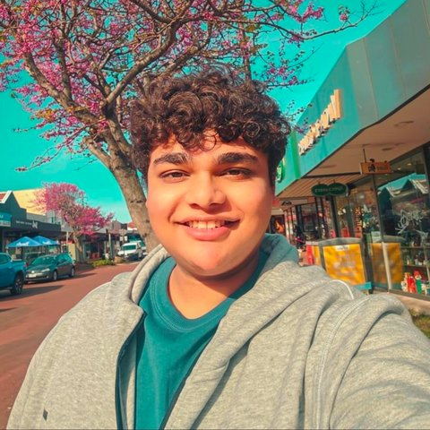

Manish Ghoshal manishghoshal99
Data Scientist
Master of Data Science (Science)
- SmartRedact: AI in the Context of Law within the Coroners Court of Victoria Supervised by Eduard Hovy, Mel Mistica
About me

I’m a data scientist and AI engineer, which mostly means matrix multiplications. My favourite thing a model can say is that it isn’t sure.
I’m studying a Master of Data Science at the University of Melbourne. I’ve chosen AI for healthcare whenever I could, from a medical chatbot to noise detection for a wearable heart monitor, and along the way I’ve led teams and worked closely with clients. You can find more of my projects on my portfolio website.
Most of what I do for fun comes down to how things work and what they mean. I’ve always been into reverse engineering. I also write and read a lot, philosophy included, and museums pull me in because every painting holds two stories, the one behind it and the one it tells. The rest is play. I play four instruments, keep a music library that refuses to pick a genre, and love basketball, badminton and chess, with a rating over 2000 on chess.com.
What I was looking for
I wanted my final semester to go into research that matters outside the university, on a project bigger than me, where people from different fields each carry a piece. That is how MDAP works. SmartRedact is a project with the Coroners Court of Victoria, on findings that sit between medicine and law, and it brings language technology researchers and software engineers together.
The piece that needed an owner was name linking, working out which names refer to the same person. Researchers have worked on that problem for decades, and it still isn’t fully solved, yet every person’s code name depends on it. It’s the kind of work I’m drawn to, the part of AI that rarely makes the demo but decides whether anyone can trust the result.
I also wanted a semester among people who know far more than I do about things I know little about, and MDAP is full of them. Socrates believed his only advantage was that he didn’t think he knew what he didn’t. Nothing shows you the limits of what you know faster than a room full of specialists.
About the project
When a coroner investigates a death, the findings can recommend changes that might prevent the next one. Learning from patterns across many findings means reading them, and every finding names the person who died, their family, their doctors and the witnesses. SmartRedact hides those people so the documents can be studied without exposing anyone.
Black bars would hide the people but lose the story, because nobody could tell who spoke to whom. Code names keep it. Each person gets one label that stays the same every time they appear, so the account still reads as a story.
Why it is hard
One person wears many names. In an invented example, Eleanor Whitfield is later called Mrs Whitfield or just Eleanor, and all three need the same code name. One name also fits many people. Families share a surname, and a finding names the family, so a bare Whitfield could be Eleanor or Rupert, and nothing in the name says which. Link the wrong two and nobody notices.
These choices have to hold across a whole finding, not just one paragraph. The longest findings run far beyond the length that research models for this problem are built to handle, so no off-the-shelf model can read one whole.
What I built
A tool that links only names written exactly the same way treats Dr Alan Prentice and Dr Prentice, two invented mentions of one doctor, as two different people. I rebuilt the part of the pipeline that decides which mentions belong to the same person. Its rule is strict on purpose. A short name joins a person only when exactly one full name in the document fits it. When a bare surname could belong to two people, the tool does not guess. It leaves the mention flagged for a person to check.
Full names in an invented finding
Dr Alan Prentice Eleanor Whitfield Rupert Whitfield
Three short names, one rule
Dr Prentice
Fits one full name, so it joins Dr Alan Prentice under the same code name.
Whitfield
Fits two, so the tool flags it for a person to decide.
Dr Prentiss
Fits none, so it gets its own code name. A link is missed, but the name stays hidden.
Matching colours mean the same code name. Every name here is invented.
On a whole sentence, the pipeline also finds places and dates and gives them code names of their own.
An invented sentence
Dr Mara Quill spoke with Tom Quill in Ballarat on 4 May 2025. She said he had left the farm early.
What the pipeline finds
Dr Mara Quill spoke with Tom Quill in Ballarat on 4 May 2025. She said he had left the farm early.
What it writes
PERSON_1 spoke with PERSON_2 in LOCATION_1 on DATE_TIME_1. She said he had left the farm early.
Matching colours show which code name replaced which name. The two Quills share a surname but get different code names. She and he stay as written, because two people could fit and the tool does not guess. Every name here is invented.
Still flagged, and that is the point
A privacy tool is only useful if people can trust what it did. When this one is unsure, it says so, and a person makes the call. The same goes for whole pages. A page the system could not read is marked as not checked, never as clean. Hide the people, keep the story, flag the doubts.
My role, achievements and learnings
I owned the name-linking stage of the pipeline, from choosing the model to designing its rules. I tested it against findings annotated by hand, looked closely at where it went wrong, and documented its limits and known exceptions so others can check them. Then I handed it to the project’s software engineers on a data contract we worked out together, so my part returns exactly what their system expects.
The result is a linking stage that does not guess, with tests that check it and an invented example that anyone can run.
My main technical lesson came from choosing a model. The strongest public model I found for linking names could not be used, because its licence restricted reuse. I now check a model’s licence and test it on my longest documents before I rely on it.
About my experience
I arrived wanting to build, and MDAP taught me to check. University gave me useful methods, and the internship asked whether they suited the problem and whether their results could be trusted. Some of the tools I relied on failed without warning, so a finished run stopped being proof that the work was right.
I also learnt to explain the work to different readers. Supervisors and engineers need different things from an update, so I began each one with a plain sentence and kept the detail for whoever needed it. And I learnt to ask early what other people needed from my part, before building it alone.
Orientation warned us to expect early overwhelm, and on day one I got lost finding the meeting room. From then on, I met so many brilliant people, and every one of them was kind and supportive. Each had a speciality I knew little about and a story worth hearing, and they shared both generously while I shared some of mine. Nobody made me feel out of place for asking, and that, together with the fortnightly seminars, made me want to do my best.
My final semester has asked a lot of me. I’ve given it my best, and I’m grateful to everyone who has helped along the way.
Thank you so much to my supervisors, Eduard Hovy and Mel Mistica, for their guidance, and to MDAP for the chance to work on a real problem. Testing my ideas with two experts in the field was the most rewarding part of the internship, and the lesson I will keep is that work is finished when someone else can check it.
If you work with sensitive text, or you just want to talk chess, art or music, I’d love to hear from you on LinkedIn.